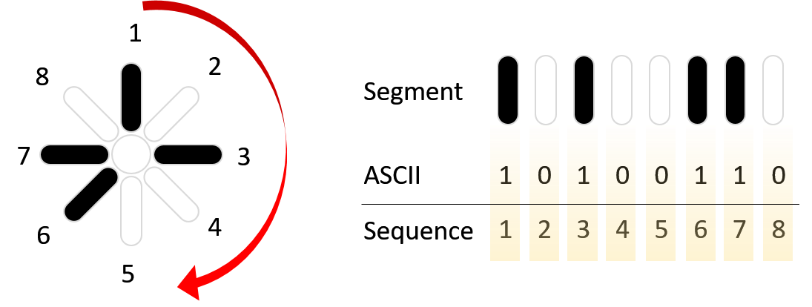
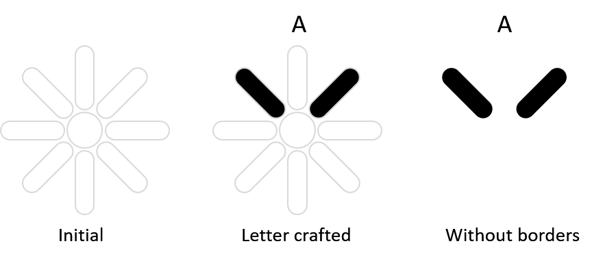
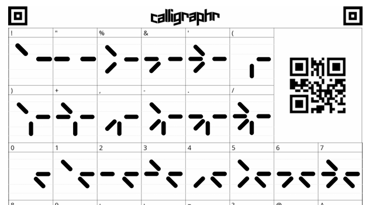

ASCII 8-Bit Circular Font
Inspired by the mysterious technology of the Predator movie and its iconic self-destruct countdown display, this unique 8-segment circular digital font combines alien aesthetics with futuristic interface design. Each character is crafted to resemble advanced electronic systems, making it ideal for sci-fi artwork, gaming interfaces, movie titles, technology branding, and futuristic digital experiences.
TRY IT OUT
8-Segment design
Each character built using8 circular segments
Full ASCII supoort
Supports A-Z, a-z, 0-9 and basic symbols
Futuristic style
Ideal for digital, sci-fi and tech designs
Easy to use
Use in any project. Free for personal use
Encoding & Decoding System
Predator ASCII 8-bit Circular is a futuristic display font based on an 8-segment digital encoding system. Each character is generated using eight independent circular segments, where every segment represents a single binary bit (0 = OFF, 1 = ON). Together, these 8 bits create a unique 256-state encoding space, allowing the system to represent the complete ASCII character range.

The decoder reads each glyph by identifying the active segments and converting the circular
pattern into an 8-bit binary value. The binary value is then matched with the standard ASCII
table, following the clockwise segment order, starting from the defined reference segment
position. This allows every symbol to be accurately converted back into its original ASCII
character.
The decoding process follows a fixed clockwise
sequence:
Segment Order:
S1 → S2 → S3 → S4 → S5 → S6 → S7 → S8 (clockwise direction)
Segment Pattern:
1 0 1 0 0 1 1 0
Binary Value:
10100110
Decimal Value:
166
ASCII Mapping:
Character code 166
How It Works
Each character in Predator ASCII 8-bit Circular is created using an 8-segment binary system. Every segment represents one bit of an 8-bit byte, creating 256 possible combinations based on standard ASCII encoding. During decoding, the segments are read clockwise from the starting position, converted into a binary value, and matched with the corresponding ASCII character. This fixed encoding method allows the font to be decoded reliably across different platforms.
What is ASCII?
ASCII (American Standard Code for Information Interchange) is a character encoding standard developed to enable computers and electronic devices to represent text in a consistent way. Each character—including letters, numbers, punctuation marks, and control characters—is assigned a unique numeric value. The original ASCII standard uses 7 bits to represent 128 characters (codes 0–127), while the extended 8-bit ASCII encoding expands this to 256 character values (codes 0–255), adding additional symbols and language-specific characters. ASCII has served as the foundation for many modern character encoding systems and remains widely used in programming, data communication, and digital text processing.
Font Creation Process

The Predator ASCII 8-bit Circular font was primarily designed using Microsoft PowerPoint, where each 8-segment character was carefully created using custom vector shapes and alignment techniques.

The completed glyph designs were exported as high-resolution PNG images and then processed using Calligraphr, a web-based font creation platform, to convert the individual character artwork into a functional TrueType Font (TTF) file. This workflow transformed the original segment-based designs into a complete digital typeface while preserving the unique circular display style.